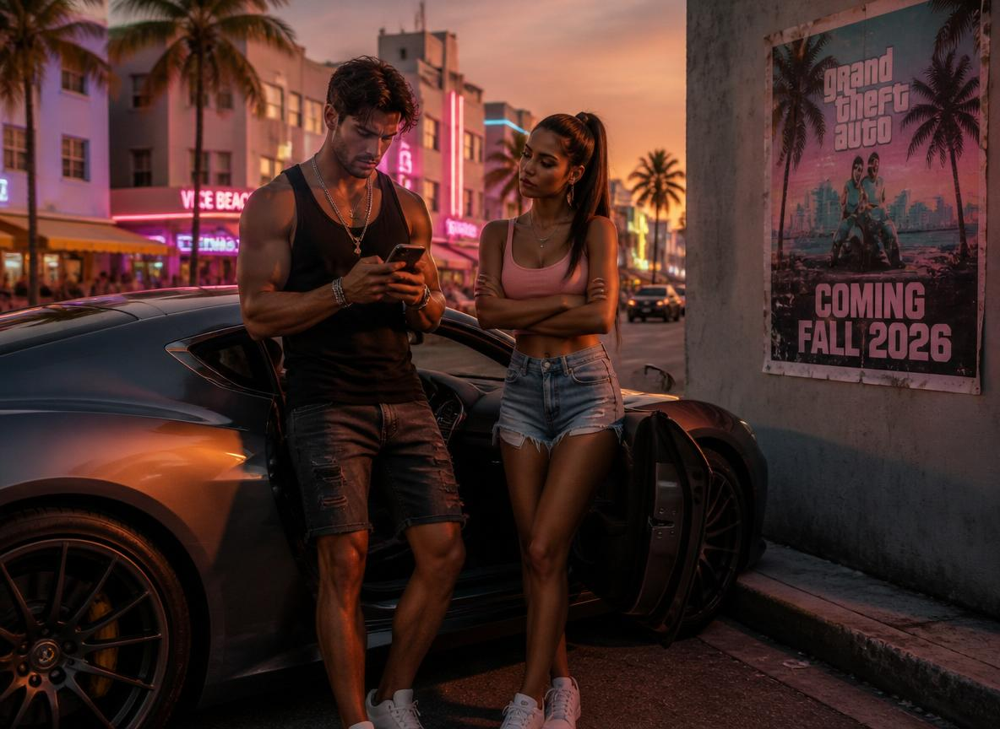

GTA 6 Pre-Order Chaos: Best Buy Leak Fails, Fans Furious — What We Actually Know About Price & Release Date

Grand Theft Auto 6 is coming in Fall 2026. That's the one confirmed fact in a sea of leaks, rumors, and false alarms that has been the entire GTA 6 pre-order saga so far. The latest episode: a Best Buy affiliate email leaked across GTAForums in early May 2026 claiming pre-orders would go live on May 18. Every GTA subreddit exploded. Fans refreshed Best Buy and PlayStation Store constantly. And then May 18 came — and went — with absolutely nothing from Rockstar or Best Buy.
The community's reaction was a perfect encapsulation of what it's like to be a GTA fan right now: a mix of exhaustion, dark humor, and unshakeable enthusiasm that hasn't dimmed despite 13 years of waiting since GTA 5. GTAForums user frankduxvandamme summed it up best: "Whether pre-orders go live today or in three months, the game is not arriving any sooner." User Particular_Hand2877 called it a "nothing burger." And user nicksuperdx noted the subreddit was "going insane" — which it was, and still is.
Here is everything we actually know, separated clearly from everything people are speculating about.
Table of Contents
- The Best Buy GTA 6 Pre-Order Leak — Full Story
- GTA 6 Official Release Date: What Take-Two Has Confirmed
- GTA 6 Price: Predictions from $69.99 to $149.99
- GTA 6 Editions — What We Expect
- GTA 6 Pre-Order Timeline: Every Leak Since Trailer 1
- GTA 6 at Summer Game Fest or PlayStation State of Play?
- What Rockstar Has Actually Said About GTA 6
- Why GTA 6 Fans Are This Desperate — The 13-Year Wait Explained
- Frequently Asked Questions
The Best Buy GTA 6 Pre-Order Leak — Full Story
The leak originated from a Best Buy affiliate partner email that circulated in the first week of May 2026. Affiliate programs send marketing materials to partner websites and content creators ahead of product listings going live, so they can prepare promotional content. The email reportedly contained a reference to GTA 6 pre-orders opening on May 18, 2026 — a specific date that gave the leak a credibility boost over the vague "soon" claims that typically circulate in gaming communities.
The email was never publicly shared in full — it was described by GTAForums members who claimed to have received it or seen screenshots. This should have been the first signal to treat it cautiously. Affiliate emails for major game releases are real and do leak occasionally, but they also get misread, misrepresented, and sometimes completely fabricated. The GTA community's hunger for any official development was strong enough to override that skepticism.
May 18 passed without any announcement. Best Buy's website showed no GTA 6 listing. PlayStation Store showed no GTA 6 pre-order. Xbox.com showed nothing. Rockstar's social channels posted nothing. Neither Rockstar nor Best Buy commented on the leak or its failure to materialize.
The aftermath split the community cleanly. One group said this proved affiliate leaks are unreliable and the community needs to stop treating them as confirmed news. Another group said the email was real but the date may have been a placeholder that changed internally. Both positions are plausible. Neither can be verified. This is the permanent state of GTA 6 fan community discourse: interesting speculation, no confirmation.
Also Read
More Gaming stories →GTA 6 Official Release Date: What Take-Two Has Confirmed
Take-Two Interactive CEO Strauss Zelnick confirmed during an earnings call that Grand Theft Auto 6 is scheduled for release in Fall 2026 on PlayStation 5 and Xbox Series X/S. That is the complete scope of what has been officially confirmed. No month. No specific date. No PC launch window. No last-gen console confirmation.
Take-Two has a strong financial incentive to be conservative with the release window. GTA 5 generated over $8 billion in revenue across multiple generations and is still selling. Take-Two's stock price and investor expectations are directly tied to GTA 6 hitting its targets. The company would not announce a Fall 2026 window unless it was highly confident the game would ship in that window — the reputational and financial cost of another delay (Rockstar delayed GTA 6 from its originally anticipated 2025 window) would be significant.
Fall gaming typically means September through November. The strongest commercial release slots in recent years have been late September and late October, avoiding direct competition with major holiday season releases in November. Based purely on Take-Two's history and market dynamics, September or October 2026 is the most likely GTA 6 launch window — but this is inference, not confirmed information.
Key Takeaways
- The Best Buy affiliate leak claiming GTA 6 pre-orders would launch May 18, 2026 proved incorrect — no pre-orders went live, and neither Rockstar nor Best Buy has commented on it.
- Take-Two Interactive has officially confirmed GTA 6 for Fall 2026 on PS5 and Xbox Series X/S. No specific date, price, or PC release has been officially announced.
- Based on historical patterns, GTA 6 pre-orders are most likely to open 4 to 6 weeks before launch — placing the expected pre-order date in September or October 2026 if the game ships on schedule.
GTA 6 Price: Predictions from $69.99 to $149.99
Rockstar has not announced GTA 6 pricing. What exists are predictions based on industry trends, previous Rockstar releases, and the broader pricing evolution happening across the games industry right now.
The current standard pricing for new PlayStation 5 and Xbox Series X/S games is $69.99 for a standard edition. This became the industry standard in 2020 when Sony moved to $70 as the base price for first-party PS5 titles. Most third-party publishers followed. GTA 6's standard edition is expected to follow this pricing.
There's a more aggressive prediction circulating — that GTA 6 could be the first mainstream third-party game to launch at $79.99. This would make it a price-setting moment for the industry, similar to how the PS5's $70 launch prices set the new standard. The argument for $79.99: GTA 6 is the most anticipated game in history, it will sell tens of millions of copies regardless of price point, and Take-Two has been publicly vocal about games being underpriced relative to their production costs. The argument against: $79.99 creates immediate negative press and may suppress impulse purchases from casual buyers.
No analyst consensus exists on the $79.99 theory. It's a possibility but probably not the most likely outcome given competitive pressure from other major releases in Fall 2026.
GTA 6 Editions — What We Expect
| Edition | Expected Price | Expected Contents |
|---|---|---|
| Standard Edition | $69.99 – $79.99 | Base game, digital only or disc |
| Deluxe / Premium Edition | $89.99 – $99.99 | Base game + in-game currency + bonus content pack |
| Collector's Edition | $129.99 – $149.99 | Physical extras: steelbook, artbook, map, figurine or keychain |
Rockstar has a history of offering multiple editions at launch. GTA 5's launch in 2013 had a Standard Edition at $59.99 and a Special Edition at $79.99 with extra in-game content. The Collector's Edition came later at $149.99 with physical items including a blueprint map, a security deposit bag, and a Rockstar Social Club code. For GTA 6, physical collector's editions are expected to be significantly more elaborate — the 13-year gap and the fan anticipation justify a premium physical package that will sell through immediately.
Online pre-order bonuses are also standard for major releases — early access to specific in-game items, exclusive vehicles, or bonus GTA Online currency are the most common form. These have been standard in every Rockstar release since GTA Online launched in 2013.
GTA 6 Pre-Order Timeline: Every Leak Since Trailer 1
Keeping track of every GTA 6 pre-order rumor since the first trailer requires a documented timeline, because the pattern is revealing.
December 4, 2023: GTA 6 Trailer 1 drops on YouTube and breaks the all-time record for non-music YouTube views in 24 hours — approximately 93 million views. Rockstar confirms a 2025 release window.
May 2024: Take-Two Interactive revises the release window to "fiscal year 2026" — effectively meaning Spring or Fall 2026. The GTA community treats this as a delay from 2025 and reacts with frustration.
Late 2024: Multiple Walmart and GameStop affiliate links for GTA 6 appear online. All are placeholder listings without confirmed prices or dates. None lead to actual pre-orders opening.
GTA 6 Trailer 2 — date unspecified but post-2024: Second trailer releases. Rockstar confirms Fall 2026 specifically on PS5 and Xbox Series X/S. No PC or Switch 2 announcement.
May 2026: Best Buy affiliate email leak claims pre-orders open May 18. The date passes with no announcement. Current status as of May 25, 2026: no official pre-order date, no price announcement, no specific launch date.
GTA 6 at Summer Game Fest or PlayStation State of Play?
Summer 2026's gaming calendar is dense. Summer Game Fest runs June 6 to 9, 2026 at the YouTube Theater in Los Angeles with Geoff Keighley hosting. The Xbox Games Showcase is June 8. A PlayStation State of Play is expected in late May or early June — Sony has been scheduling these roughly every 6 to 8 weeks throughout 2025 and 2026.
Rockstar has historically not appeared at third-party showcases. GTA trailers drop on Rockstar's own YouTube channel without warning, without pre-show announcements, and without participation in industry events. When GTA 6 Trailer 1 dropped in December 2023, it was announced with approximately 24 hours of social media notice and released independently of any event.
The most likely scenario for any official GTA 6 announcement — specific launch date, pre-order opening, or pricing — is that Rockstar posts it directly to their channels on a Tuesday or Wednesday with short advance notice. PlayStation and Xbox may simultaneously activate pre-order pages at the same moment. The announcement may be coordinated with Sony for a PlayStation State of Play appearance, given GTA 6's apparent marketing proximity to PlayStation — Rockstar has been closer to PlayStation messaging on GTA 6 than Xbox so far.
But Rockstar doing things on their own schedule, without participation in industry events, is the default assumption. Don't expect a Summer Game Fest announcement. Expect a cold drop with 24-48 hours notice.
What Rockstar Has Actually Said About GTA 6
Rockstar Games has been remarkably quiet about GTA 6 beyond what's visible in the trailers. The official confirmed facts from Rockstar directly:
- GTA 6 is the official title — not Grand Theft Auto VI written out.
- The game is set in a fictional version of Miami and the state of Florida, called Vice City and Leonida State.
- The protagonist lineup includes Lucia — the first female protagonist in a mainline Grand Theft Auto game since 2001's GTA III era.
- The game is coming to PS5 and Xbox Series X/S in Fall 2026.
- Strauss Zelnick said during a February 2026 earnings call that GTA 6 is "tracking to meet our expectations" — which, for a company with Take-Two's financial guidance discipline, is a strong signal the Fall 2026 window is holding.
Everything else — PC launch, multiplayer details, price, pre-order bonus content, editions structure — is unconfirmed and comes from analyst predictions, retailer placeholder listings, or community speculation.
Why GTA 6 Fans Are This Desperate — The 13-Year Wait Explained
GTA 5 launched on September 17, 2013. At the time of GTA 6's Fall 2026 release, it will have been 13 years since the last new mainline Grand Theft Auto game. No other franchise of equivalent commercial scale has had a gap anywhere close to this long between mainline entries. The closest comparable in gaming history might be Half-Life 2 to Half-Life Alyx — 16 years — but Alyx was VR-only, not a true mainstream sequel.
During those 13 years, Rockstar kept GTA 5 alive with GTA Online, which generated billions in microtransaction revenue. The economic success of GTA Online actually delayed GTA 6 development in a meaningful way — the online revenue was so large that Rockstar expanded its Online team significantly, pulling resources and personnel from new game development. This is documented through reporting by Bloomberg's Jason Schreier and confirmed indirectly by Take-Two executives discussing their "live service" strategy.
The result is a fanbase that has been simultaneously sustained by GTA Online and frustrated by it — playing a 13-year-old game's multiplayer mode while waiting for a sequel that kept getting pushed back. When GTA 6 Trailer 1 dropped in December 2023, it became the most-watched YouTube video in 24 hours specifically because the pent-up demand from that fan community is genuinely extraordinary.
That's the context for the Best Buy leak panic. It's not irrational excitement about a game announcement. It's 13 years of accumulated anticipation being channeled into every possible rumor, no matter how unverified.
Frequently Asked Questions
When will GTA 6 pre-orders go live?
No official date has been announced. The Best Buy affiliate email claiming May 18, 2026 was incorrect. Based on industry standard patterns, pre-orders typically open 4 to 6 weeks before a game's launch. Given the Fall 2026 release window, the most likely pre-order opening window is September or October 2026.
How much will GTA 6 cost?
No official price has been announced. Industry predictions suggest $69.99 for a standard edition, $89.99 to $99.99 for a Deluxe edition, and $129.99 to $149.99 for a Collector's Edition with physical extras. Some analysts believe GTA 6 could be the first mainstream game to launch at $79.99 base price, though this remains speculation.
What happened with the Best Buy GTA 6 pre-order leak?
A Best Buy affiliate partner email shared on GTAForums claimed pre-orders would open May 18, 2026. May 18 passed with no announcement from Rockstar, Best Buy, PlayStation Store, or Xbox. The leak was incorrect. Neither company commented on it.
When is GTA 6 releasing?
Take-Two Interactive has confirmed Fall 2026 on PlayStation 5 and Xbox Series X/S. No specific date has been announced. CEO Strauss Zelnick stated in February 2026 that the game is "tracking to meet our expectations," suggesting the Fall 2026 window is solid.
Will GTA 6 be shown at Summer Game Fest 2026?
No official confirmation. Rockstar traditionally does not participate in third-party showcases — GTA announcements have historically come as cold drops with 24 to 48 hours of advance notice directly from Rockstar's channels. A PlayStation State of Play appearance is possible but not confirmed.
What platforms will GTA 6 launch on?
Confirmed platforms are PlayStation 5 and Xbox Series X/S for the Fall 2026 launch. PC has not been given a launch date — Rockstar's pattern is to release on PC 12 to 18 months after console launch. Nintendo Switch 2 has not been announced. PS4 and Xbox One are not expected to receive GTA 6.
Conclusion
The GTA 6 pre-order situation as of May 25, 2026 is this: no date, no price, no confirmed editions, no official word from Rockstar about what comes next. What exists is a confirmed Fall 2026 launch window on PS5 and Xbox Series X/S, a set of credible price predictions from industry analysts, and a fandom that has been waiting 13 years and is prepared to set the internet on fire the moment the real announcement drops.
The Best Buy leak failing isn't a tragedy — it's a Tuesday in GTA fandom. Every fake leak that fizzles is actually useful in one way: it trains the community to be slightly more skeptical of the next one. The real pre-order announcement, when it comes, will not require a leaked affiliate email to spread the news. Rockstar will post it and every gaming news site, social media platform, and group chat in the world will know within minutes. Until then, the wait continues — and at this point, GTA fans are professionals at waiting.

Marcus J. Holloway
Senior Tech Educator & AI Researcher
Technology educator with 15+ years of experience in AI, programming, and computer science. Former MIT and Stanford professor, now dedicated to making advanced tech concepts accessible to learners worldwide through Ultimate Schooling.
💬 Questions or Comments?
Have a question or want to share your thoughts? Leave a comment below!